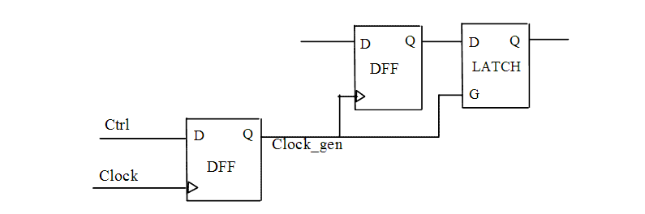

| Description | This rule detects internally generated clocks that are derived from sequential elements (flip-flops or latches) in the design. Internally generated clocks reduce the test coverage of your design. It is usually a good idea to add extra logic such as multiplexers or JTAG controllers to control all the clocks in your design. Arguments:
%s1 is the generated clock Source Position: The position is the line in which the clock is defined. |
| Policy | DESIGN |
| Ruleset | CLOCKS |
| Language | VHDL/Verilog |
| Type | Hardware |
| Severity | Error |
This is an example of invalid code, followed by a diagram that illustrates the problem:
module ntl_clk35_top (Clock, Ctrl, Din, Dout); input Clock, Reset, Ctrl, Din; output Dout; reg Clock_gen, net_1, net_2; //DFFR -- flip-flop with reset GTECH_FD1 I0(.D(Ctrl), .CP(Clock), .Q(Clock_gen)); // generated clock - Clock_gen GTECH_FD1 I1(.D(Din), .CP(Clock_gen), .Q(net_1)); // NTL_CLK35 fires -- generated clock drives sequential cell GTECH_LD1 I2(.D(net_1), .G(Clock_gen), .Q(net_2)); // NTL_CLK35 fires -- generated clock drives sequential cell endmodule
Sample Output
4: reg Dout, Clk_gen2_1, D_int2_1;
^
ntl_clk35.v:4: CLOCKS> [ERROR] NTL_CLK35: Do not use internally
generated clock derived from sequential element
top.Clk_gen2_1
--- one FF driven by this clock is top.&AS2.~ff0 (file: ntl_clk35.v,
line: 14)
In the above sample output,
Secondary Message
one FF driven by this clock is %s2.
Argument
%s2 is the flip-flop which is driven by the clock %s1.
Source Position
The position is the line where the flip-flop is instantiated.
Schematics in Path Viewer
Two flip-flops are seen. The output of one flip-flop is used as the clock pin of the other flip-flop
